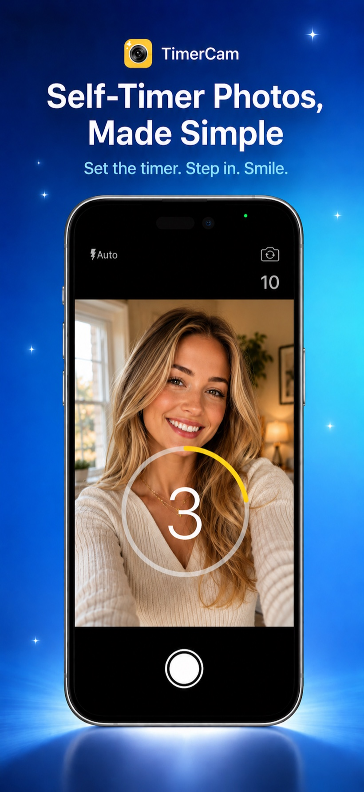
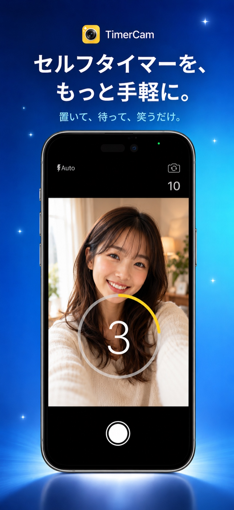

Completely redesignedデザインを全面刷新
One tap.


One tap.
Hands-free photos.
ワンタップで、
ハンズフリー撮影。
TimerCam is the easiest way to take self-timer photos — perfect for selfies and group shots. Redesigned for a smoother, more intuitive experience. TimerCam は、セルフタイマー写真を最も簡単に撮れるアプリ。自撮りや集合写真に最適。デザインとユーザー体験を根本から再設計し、より直感的で使いやすくなりました。
⭐ Over 10 million downloads worldwide · #1 Photography App in Japan
⭐ 全世界1000万ダウンロード突破 ・ 日本の写真アプリ ランキング1位

